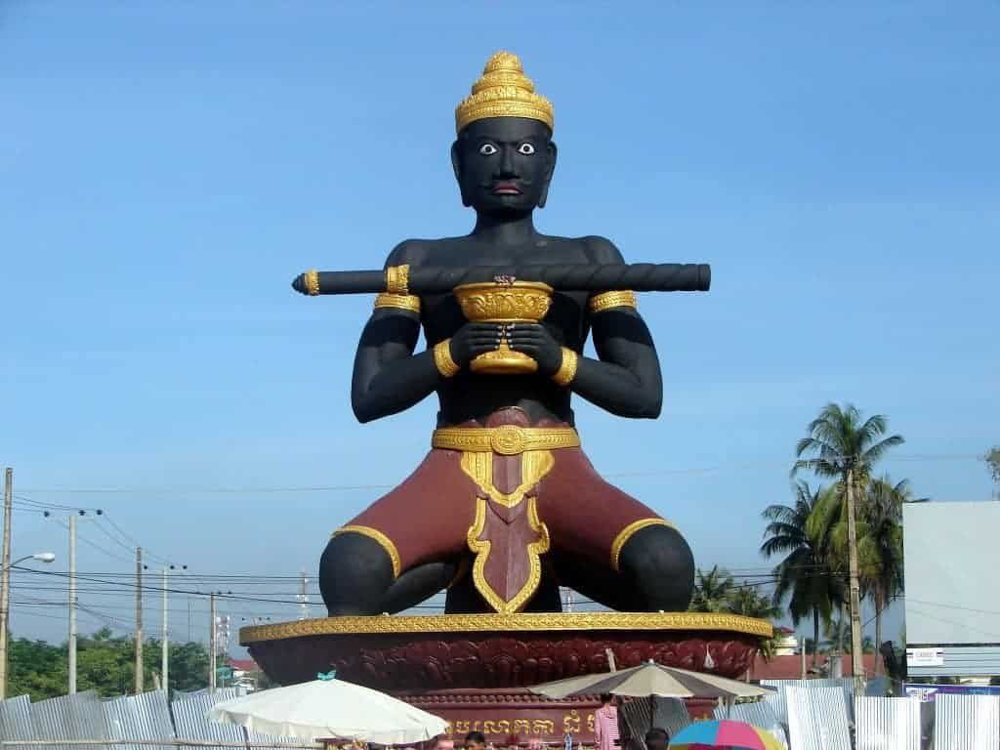
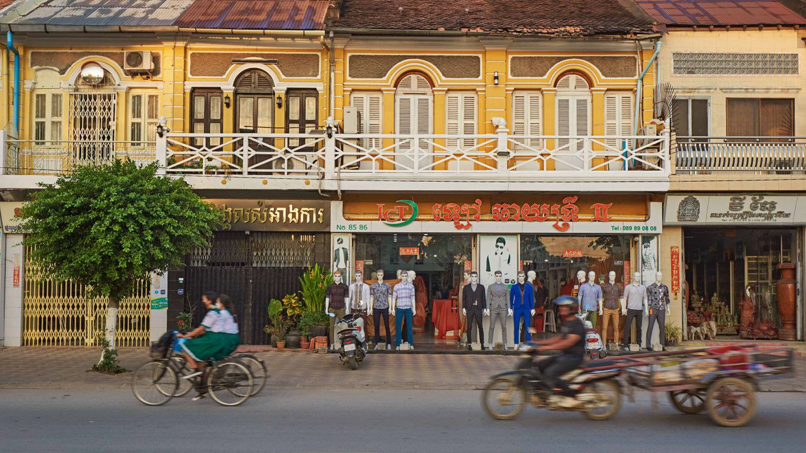

| Home | Market | Visit | Maps | About me |
|---|
 Battambang Khmer: បាត់ដំបង, Bătdâmbângis a province of Cambodia in the far northwest of the country. Bordering provinces are Banteay Meanchey to the north, Pursat to the east and south, Siem Reap to the northeast, and Pailin to the west. The northern and southern extremes of the province's western boundaries form part of the international border with Thailand. In addition, Tonlé Sap forms part of the northeastern boundary between Siem Reap and Pursat. Its capital and largest city is Battambang.Battambang Khmer:បាត់ដំបង, Bătdâmbângis a province of Cambodia in the far northwest of the country. Bordering provinces are Banteay Meanchey to the north, Pursat to the east and south, Siem Reap to the northeast, and Pailin to the west. The northern and southern extremes of the province's western boundaries form part of the international border with Thailand. In addition, Tonlé Sap forms part of the northeastern boundary between Siem Reap and Pursat. Its capital and largest city is Battambang. and Pailin to the west. The northern and southern extremes of the province's western boundaries form part of the international border with Thailand. In addition, Tonlé Sap forms part of the northeastern boundary between Siem Reap and Pursat. Its capital city is Battambang.
 Bordering provinces are Banteay Meanchey to the north, Pursat to the east and south, Siem Reap to the northeast, and Pailin to the west. The northern and southern extremes of the province's western boundaries form part of the international border with Thailand. In addition, Tonlé Sap forms part of the northeastern boundary between Siem Reap and Pursat. and largest city is Bordering provinces are Banteay Meanchey to the north, Pursat to the east and south, Siem Reap to the northeast, and Pailin to the west. The northern and southern extremes of the province's western boundaries form part of the international and largest city is Battambang.